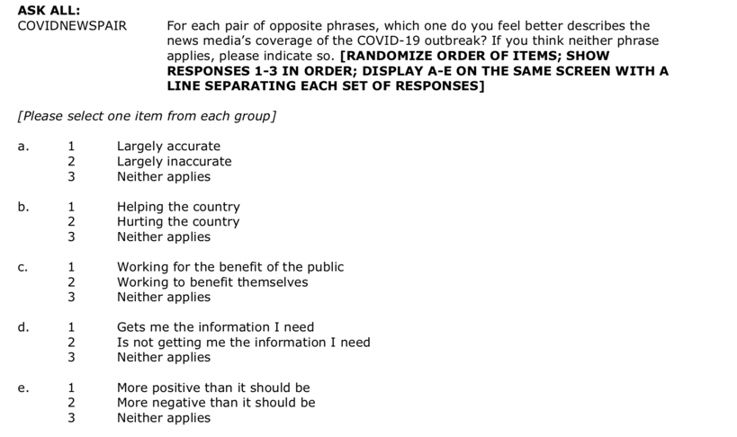
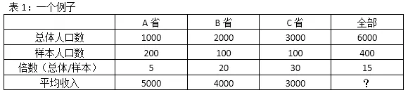

Analysing the Pew Survey Data of COVID19¶

阅读 https://www.journalism.org/dataset/election-news-pathways-april-2020-survey/
下载Pathways-April-2020-ATP-W66-1.zip 数据，该数据来自pewresearch针对2020年总统选举所做的panel study中的一次，其中加入了关于covid19的部分问题。


https://www.journalism.org/2020/05/08/americans-views-of-the-news-media-during-the-covid-19-outbreak/

# the statsmodels.api uses numpy array notation
# statsmodels.formula.api use formula notation (similar to R's formula notation)
import numpy as np
import pandas as pd
import matplotlib.pyplot as plt
import seaborn as sns
import statsmodels.api as sm
import statsmodels.formula.api as smf
cd "/Users/datalab/bigdata/Pathways April 2020 (ATP W66)/"
/Users/datalab/bigdata/Pathways April 2020 (ATP W66)
ls
Pathways April 2020 (ATP W66) Methodology.pdf*
Pathways April 2020 (ATP W66) Questionnaire.pdf*
Pathways April 2020 (ATP W66) Readme.txt*
Pathways April 2020 (ATP W66) Topline.pdf*
Pathways April 2020 (ATP W66).sav*
First of all, we install the pyreadstat module, which allows us to import SPSS files as DataFrames
!pip install pyreadstat
Collecting pyreadstat
Downloading pyreadstat-0.3.3-cp37-cp37m-macosx_10_9_x86_64.whl (527 kB)
|████████████████████████████████| 527 kB 233 kB/s eta 0:00:01
?25hRequirement already satisfied: pandas>0.24.0 in /opt/anaconda3/lib/python3.7/site-packages (from pyreadstat) (1.0.1)
Requirement already satisfied: numpy>=1.13.3 in /opt/anaconda3/lib/python3.7/site-packages (from pandas>0.24.0->pyreadstat) (1.18.1)
Requirement already satisfied: pytz>=2017.2 in /opt/anaconda3/lib/python3.7/site-packages (from pandas>0.24.0->pyreadstat) (2019.3)
Requirement already satisfied: python-dateutil>=2.6.1 in /opt/anaconda3/lib/python3.7/site-packages (from pandas>0.24.0->pyreadstat) (2.8.1)
Requirement already satisfied: six>=1.5 in /opt/anaconda3/lib/python3.7/site-packages (from python-dateutil>=2.6.1->pandas>0.24.0->pyreadstat) (1.14.0)
Installing collected packages: pyreadstat
Successfully installed pyreadstat-0.3.3
# df = pd.read_spss('Pathways April 2020 (ATP W66).sav')
# df.head()
import pyreadstat
df, meta = pyreadstat.read_sav('Pathways April 2020 (ATP W66).sav')
df.head(5)
| QKEY | Device_Type_W66 | LANG_W66 | FORM_W66 | COMATTACH_W66 | MH_TRACK_a_W66 | MH_TRACK_b_W66 | MH_TRACK_c_W66 | MH_TRACK_d_W66 | MH_TRACK_e_W66 | ... | F_PARTYSUM_FINAL | F_INCOME | F_INCOME_RECODE | F_REG | F_IDEO | F_ACSWEB | F_VOLSUM | F_HISP_ORIGIN | F_YEARSINUS | WEIGHT_W66 | |
|---|---|---|---|---|---|---|---|---|---|---|---|---|---|---|---|---|---|---|---|---|---|
| 0 | 100197.0 | 3.0 | 1.0 | 2.0 | 2.0 | 1.0 | 1.0 | 1.0 | 2.0 | 2.0 | ... | 2.0 | 3.0 | 3.0 | 1.0 | 3.0 | 1.0 | 1.0 | 6.0 | 5.0 | 0.294864 |
| 1 | 100260.0 | 3.0 | 1.0 | 1.0 | 2.0 | 1.0 | 1.0 | 1.0 | 3.0 | 1.0 | ... | 1.0 | 6.0 | 2.0 | 1.0 | 1.0 | 1.0 | 2.0 | 6.0 | 5.0 | 0.689713 |
| 2 | 100314.0 | 2.0 | 1.0 | 2.0 | 3.0 | 1.0 | 2.0 | 2.0 | 3.0 | 1.0 | ... | 1.0 | 4.0 | 2.0 | 1.0 | 3.0 | 1.0 | 1.0 | 6.0 | 5.0 | 0.442058 |
| 3 | 100363.0 | 2.0 | 1.0 | 2.0 | 2.0 | 1.0 | 2.0 | 3.0 | 2.0 | 1.0 | ... | 2.0 | 9.0 | 1.0 | 1.0 | 3.0 | 1.0 | 1.0 | 6.0 | 5.0 | 0.423189 |
| 4 | 100446.0 | 1.0 | 1.0 | 1.0 | 2.0 | 2.0 | 3.0 | 2.0 | 2.0 | 1.0 | ... | 2.0 | 8.0 | 1.0 | 1.0 | 4.0 | 1.0 | 1.0 | 6.0 | 5.0 | 0.368074 |
5 rows × 119 columns
meta_dict = dict(zip(meta.column_names, meta.column_labels))
meta_dict.keys()
dict_keys(['QKEY', 'Device_Type_W66', 'LANG_W66', 'FORM_W66', 'COMATTACH_W66', 'MH_TRACK_a_W66', 'MH_TRACK_b_W66', 'MH_TRACK_c_W66', 'MH_TRACK_d_W66', 'MH_TRACK_e_W66', 'COVIDFOL_W66', 'COVIDCOVER1_W66', 'COVIDTONE_a_W66', 'COVIDTONE_b_W66', 'COVIDTONE_c_W66', 'COVIDTONE_d_W66', 'COVIDNEWSPLAT_a_W66', 'COVIDNEWSPLAT_b_W66', 'COVIDNEWSPLAT_c_W66', 'COVIDNEWSPLAT_d_W66', 'COVIDNEWSPLAT_e_W66', 'COVIDNEWSPLAT_f_W66', 'COVIDNEWSPLAT_g_W66', 'COVIDNEWSPLAT_h_W66', 'COVIDNEWSPLAT_i_W66', 'COVIDNEWSPLAT_j_W66', 'COVIDNEWSRELY_W66', 'COVIDDEAL_W66', 'COVIDNATLOC_W66', 'COVIDNEWSSWITCH_W66', 'COVIDDISC_W66', 'COVIDSM_W66', 'COVIDSMSHARE_W66', 'COVIDINFO_W66', 'COVIDREPORT_W66', 'COVIDNEWSFINAN_W66', 'COVIDNEWSPAIR_a_W66', 'COVIDNEWSPAIR_b_W66', 'COVIDNEWSPAIR_c_W66', 'COVIDNEWSPAIR_d_W66', 'COVIDNEWSPAIR_e_W66', 'COVIDINFODIFF_W66', 'COVIDWORN_W66', 'COVIDNEWSFEEL_W66', 'COVIDTOPICA_a_W66', 'COVIDTOPICA_b_W66', 'COVIDTOPICA_c_W66', 'COVIDTOPICA_d_W66', 'COVIDTOPICA_e_W66', 'COVIDTOPICA_f_W66', 'COVIDTOPICB_a_W66', 'COVIDTOPICB_b_W66', 'COVIDTOPICB_c_W66', 'COVIDTOPICB_d_W66', 'COVIDTOPICB_e_W66', 'COVIDTOPICB_f_W66', 'COVIDTOPICB_g_W66', 'COVIDINFOCHECK_W66', 'MH_TRACK_CV_W66', 'COVIDCUREWORK_W66', 'COVIDCUREHEARD_a_W66', 'COVIDCUREHEARD_b_W66', 'COVIDCUREHEARD_c_W66', 'COVIDCUREHEARD_d_W66', 'COVIDCUREHEARD_e_W66', 'COVIDCUREHEARD_f_W66', 'COVIDBILL_a_W66', 'COVIDBILL_b_W66', 'COVIDBILL_c_W66', 'COVIDBILL_d_W66', 'COVIDBILL_e_W66', 'COVIDBILLSIZE_W66', 'COVIDPOLCOOP_W66', 'COVIDMISINFO_W66', 'COVIDCONFUSE_W66', 'COVIDINFOWRONG_W66', 'COVIDAVOID_W66', 'CAMPNII_W66', 'CAMP20INT_W66', 'PELECT20_STATUS_W66', 'COVIDCONG1_W66', 'COVIDCONG2_W66', 'COVIDSPIR_W66', 'GROUP_TRUST_a_W57', 'NEWS_MOST_W57', 'TALKPOL_W57', 'FOLELECT_W57', 'CR_PARTYNEWSUSE_W57', 'CR_NEWS_INFLU_W57', 'CR_DIG_SAV_W57', 'CR_MAINSOPOL_GROUPS_W57', 'CR_KNOWLEDGE_INDEX_W57', 'F_METRO', 'F_CREGION', 'F_AGECAT', 'F_SEX', 'F_EDUCCAT', 'F_EDUCCAT2', 'F_HISP', 'F_RACECMB', 'F_RACETHN', 'F_CITIZEN', 'F_NATIVITY2', 'F_MARITAL', 'F_RELIG', 'F_BORN', 'F_ATTEND', 'F_PARTY_FINAL', 'F_PARTYLN_FINAL', 'F_PARTYSUM_FINAL', 'F_INCOME', 'F_INCOME_RECODE', 'F_REG', 'F_IDEO', 'F_ACSWEB', 'F_VOLSUM', 'F_HISP_ORIGIN', 'F_YEARSINUS', 'WEIGHT_W66'])
meta_dict['F_INCOME'], meta_dict['COVIDCOVER1_W66'], meta_dict['COVIDFOL_W66']
('Family income',
'COVIDCOVER1_W66. How well do you think the news media have covered the coronavirus outbreak?',
'COVIDFOL_W66. How closely have you been following news about the outbreak of the coronavirus strain known as COVID-19?')
for i, j in meta_dict.items():
print(i, j)
QKEY Unique ID
Device_Type_W66 The device used in the latest access of the survey link
LANG_W66 Preferred language
FORM_W66 Form number
COMATTACH_W66 COMATTACH_W66. In general, how attached do you feel to your local community?
MH_TRACK_a_W66 MH_TRACK_a_W66. In the past 7 days, how often have you… Felt nervous, anxious, or on edge?
MH_TRACK_b_W66 MH_TRACK_b_W66. In the past 7 days, how often have you… Felt depressed?
MH_TRACK_c_W66 MH_TRACK_c_W66. In the past 7 days, how often have you… Felt lonely?
MH_TRACK_d_W66 MH_TRACK_d_W66. In the past 7 days, how often have you… Felt hopeful about the future?
MH_TRACK_e_W66 MH_TRACK_e_W66. In the past 7 days, how often have you… Had trouble sleeping?
COVIDFOL_W66 COVIDFOL_W66. How closely have you been following news about the outbreak of the coronavirus strain known as COVID-19?
COVIDCOVER1_W66 COVIDCOVER1_W66. How well do you think the news media have covered the coronavirus outbreak?
COVIDTONE_a_W66 COVIDTONE_a_W66. Thinking about the coronavirus outbreak, how in general do you think each of the following has responded? The news media
COVIDTONE_b_W66 COVIDTONE_b_W66. Thinking about the coronavirus outbreak, how in general do you think each of the following has responded? Donald Trump
COVIDTONE_c_W66 COVIDTONE_c_W66. Thinking about the coronavirus outbreak, how in general do you think each of the following has responded? Democratic leaders in Congress
COVIDTONE_d_W66 COVIDTONE_d_W66. Thinking about the coronavirus outbreak, how in general do you think each of the following has responded? Public health officials such as those at the CDC (Centers for Disease Control and Prevention)
COVIDNEWSPLAT_a_W66 COVIDNEWSPLAT_a_W66. Please indicate whether each of the following is a source of news for you about the coronavirus outbreak. International news outlets
COVIDNEWSPLAT_b_W66 COVIDNEWSPLAT_b_W66. Please indicate whether each of the following is a source of news for you about the coronavirus outbreak. National news outlets
COVIDNEWSPLAT_c_W66 COVIDNEWSPLAT_c_W66. Please indicate whether each of the following is a source of news for you about the coronavirus outbreak. Local news outlets
COVIDNEWSPLAT_d_W66 COVIDNEWSPLAT_d_W66. Please indicate whether each of the following is a source of news for you about the coronavirus outbreak. Donald Trump and his coronavirus task force
COVIDNEWSPLAT_e_W66 COVIDNEWSPLAT_e_W66. Please indicate whether each of the following is a source of news for you about the coronavirus outbreak. Joe Biden and his campaign
COVIDNEWSPLAT_f_W66 COVIDNEWSPLAT_f_W66. Please indicate whether each of the following is a source of news for you about the coronavirus outbreak. State and local elected officials and their offices
COVIDNEWSPLAT_g_W66 COVIDNEWSPLAT_g_W66. Please indicate whether each of the following is a source of news for you about the coronavirus outbreak. Public health organizations and officials
COVIDNEWSPLAT_h_W66 COVIDNEWSPLAT_h_W66. Please indicate whether each of the following is a source of news for you about the coronavirus outbreak. Friends, family and neighbors
COVIDNEWSPLAT_i_W66 COVIDNEWSPLAT_i_W66. Please indicate whether each of the following is a source of news for you about the coronavirus outbreak. Community or neighborhood newsletter or Listserv
COVIDNEWSPLAT_j_W66 COVIDNEWSPLAT_j_W66. Please indicate whether each of the following is a source of news for you about the coronavirus outbreak. Online forums or discussion groups
COVIDNEWSRELY_W66 COVIDNEWSRELY_W66. And which of these sources do you RELY ON MOST for news about the coronavirus outbreak?
COVIDDEAL_W66 COVIDDEAL_W66. All in all, do you think that the coronavirus outbreak has been…
COVIDNATLOC_W66 COVIDNATLOC_W66. Do you pay more attention to news about the coronavirus outbreak at...
COVIDNEWSSWITCH_W66 COVIDNEWSSWITCH_W66. In keeping up with the coronavirus outbreak, have you turned to any different sources for news than you usually do?
COVIDDISC_W66 COVIDDISC_W66. How often, if at all, are you discussing the coronavirus outbreak with others whether online, in person or over the phone?
COVIDSM_W66 COVIDSM_W66. How often, if ever, do you get news and information about the coronavirus outbreak on social media (such as Facebook, Twitter, or Instagram)?
COVIDSMSHARE_W66 COVIDSMSHARE_W66. Have you posted or shared any news and information about the coronavirus outbreak on social media?
COVIDINFO_W66 COVIDINFO_W66. In general, do you feel like you have a handle on the issues and developments surrounding the coronavirus outbreak?
COVIDREPORT_W66 COVIDREPORT_W66. How much, if at all, do you think journalists have had to change the way they report the news due to the coronavirus outbreak?
COVIDNEWSFINAN_W66 COVIDNEWSFINAN_W66. To the best of your knowledge, what impact has the coronavirus outbreak had on the finances of most news organizations?
COVIDNEWSPAIR_a_W66 COVIDNEWSPAIR_a_W66. For each pair of opposite phrases, which one do you feel better describes the news media’s coverage of the COVID-19 outbreak? If you think neither phrase applies, please indicate so.Largely accurate/ inaccurate
COVIDNEWSPAIR_b_W66 COVIDNEWSPAIR_b_W66. For each pair of opposite phrases, which one do you feel better describes the news media’s coverage of the COVID-19 outbreak? If you think neither phrase applies, please indicate so.Helping/ Hurting the country
COVIDNEWSPAIR_c_W66 COVIDNEWSPAIR_c_W66. For each pair of opposite phrases, which one do you feel better describes the news media’s coverage of the COVID-19 outbreak? If you think neither phrase applies, please indicate so. Working for the benefit of the public/ to benefit
COVIDNEWSPAIR_d_W66 COVIDNEWSPAIR_d_W66. For each pair of opposite phrases, which one do you feel better describes the news media’s coverage of the COVID-19 outbreak? If you think neither phrase applies, please indicate so.Gets me the information I need/ Is not getting me t
COVIDNEWSPAIR_e_W66 COVIDNEWSPAIR_e_W66. For each pair of opposite phrases, which one do you feel better describes the news media’s coverage of the COVID-19 outbreak? If you think neither phrase applies, please indicate so. More positive/ negative than it should be
COVIDINFODIFF_W66 COVIDINFODIFF_W66. When you get news and information about the coronavirus outbreak, do you generally find it…
COVIDWORN_W66 COVIDWORN_W66. Which of the following statements comes closer to how you feel?
COVIDNEWSFEEL_W66 COVIDNEWSFEEL_W66. Does keeping up with news about the coronavirus outbreak make you feel…
COVIDTOPICA_a_W66 COVIDTOPICA_a_W66. How closely are you following NATIONAL news and information about each of these topics related to the coronavirus outbreak? The economic impact of the outbreak
COVIDTOPICA_b_W66 COVIDTOPICA_b_W66. How closely are you following NATIONAL news and information about each of these topics related to the coronavirus outbreak? Actions and statements by the federal government
COVIDTOPICA_c_W66 COVIDTOPICA_c_W66. How closely are you following NATIONAL news and information about each of these topics related to the coronavirus outbreak? The number of confirmed cases and deaths in the U.S.
COVIDTOPICA_d_W66 COVIDTOPICA_d_W66. How closely are you following NATIONAL news and information about each of these topics related to the coronavirus outbreak? Advice from national health organizations, such as the CDC (Centers for Disease Control and Prevention)
COVIDTOPICA_e_W66 COVIDTOPICA_e_W66. How closely are you following NATIONAL news and information about each of these topics related to the coronavirus outbreak? The ability of hospitals across the country to treat patients
COVIDTOPICA_f_W66 COVIDTOPICA_f_W66. How closely are you following NATIONAL news and information about each of these topics related to the coronavirus outbreak? The health impact of the coronavirus on people like me
COVIDTOPICB_a_W66 COVIDTOPICB_a_W66. And how closely are you following news and information in YOUR LOCAL AREA about each of these topics related to the coronavirus outbreak? The status of nearby businesses
COVIDTOPICB_b_W66 COVIDTOPICB_b_W66. And how closely are you following news and information in YOUR LOCAL AREA about each of these topics related to the coronavirus outbreak? The status of nearby schools
COVIDTOPICB_c_W66 COVIDTOPICB_c_W66. And how closely are you following news and information in YOUR LOCAL AREA about each of these topics related to the coronavirus outbreak?The availability of food and other essentials in stores
COVIDTOPICB_d_W66 COVIDTOPICB_d_W66. And how closely are you following news and information in YOUR LOCAL AREA about each of these topics related to the coronavirus outbreak?Actions and statements by your state and local government
COVIDTOPICB_e_W66 COVIDTOPICB_e_W66. And how closely are you following news and information in YOUR LOCAL AREA about each of these topics related to the coronavirus outbreak? The availability of testing for COVID-19
COVIDTOPICB_f_W66 COVIDTOPICB_f_W66. And how closely are you following news and information in YOUR LOCAL AREA about each of these topics related to the coronavirus outbreak? The status of nearby hospitals
COVIDTOPICB_g_W66 COVIDTOPICB_g_W66. And how closely are you following news and information in YOUR LOCAL AREA about each of these topics related to the coronavirus outbreak?Availability of unemployment benefits and other aid
COVIDINFOCHECK_W66 COVIDINFOCHECK_W66. If you wanted to check the accuracy of news and information about the coronavirus, how confident are you that you would know what steps to take?
MH_TRACK_CV_W66 MH_TRACK_CV_W66. In the past 7 days, how often have you had physical reactions, such as sweating, trouble breathing, nausea, or a pounding heart, when THINKING about your experience with the coronavirus outbreak?
COVIDCUREWORK_W66 COVIDCUREWORK_W66. As far as you know, how effective are at-home treatments for serious cases of the coronavirus?
COVIDCUREHEARD_a_W66 COVIDCUREHEARD_a_W66. How much, if anything, have you heard about each of the following? Using the medicine known as hydroxychloroquine to treat the coronavirus
COVIDCUREHEARD_b_W66 COVIDCUREHEARD_b_W66. How much, if anything, have you heard about each of the following? Drinking a form of diluted bleach sometimes called “miracle mineral solution” (MMS) to treat the coronavirus
COVIDCUREHEARD_c_W66 COVIDCUREHEARD_c_W66. How much, if anything, have you heard about each of the following? Taking vitamin C to prevent getting the coronavirus
COVIDCUREHEARD_d_W66 COVIDCUREHEARD_d_W66. How much, if anything, have you heard about each of the following? Treating COVID-19 patients with blood plasma transfusions from recovered patients
COVIDCUREHEARD_e_W66 COVIDCUREHEARD_e_W66. How much, if anything, have you heard about each of the following The coronavirus going away in warmer weather
COVIDCUREHEARD_f_W66 COVIDCUREHEARD_f_W66. How much, if anything, have you heard about each of the following? A connection between 5G mobile-phone technology and the coronavirus
COVIDBILL_a_W66 COVIDBILL_a_W66. From what you’ve seen or heard, does the economic aid law passed by Congress and signed by Donald Trump include each of the following or not? $1,200 in stimulus money for many American adults
COVIDBILL_b_W66 COVIDBILL_b_W66. From what you’ve seen or heard, does the economic aid law passed by Congress and signed by Donald Trump include each of the following or not? Pay raises for members of Congress
COVIDBILL_c_W66 COVIDBILL_c_W66. From what you’ve seen or heard, does the economic aid law passed by Congress and signed by Donald Trump include each of the following or not?Restrictions on businesses connected to Donald Trump and other administration officials from rec
COVIDBILL_d_W66 COVIDBILL_d_W66. From what you’ve seen or heard, does the economic aid law passed by Congress and signed by Donald Trump include each of the following or not?Increased unemployment benefits for the next four months
COVIDBILL_e_W66 COVIDBILL_e_W66. From what you’ve seen or heard, does the economic aid law passed by Congress and signed by Donald Trump include each of the following or not?Federal aid and benefits for undocumented immigrants
COVIDBILLSIZE_W66 COVIDBILLSIZE_W66. From what you have seen or heard, about how much economic aid was in the bill passed by Congress and Donald Trump in March?
COVIDPOLCOOP_W66 COVIDPOLCOOP_W66. How well are elected officials working together to address the coronavirus outbreak?
COVIDMISINFO_W66 COVIDMISINFO_W66. How much, if any, news and information have you seen or heard about the coronavirus outbreak that seemed completely made up?
COVIDCONFUSE_W66 COVIDCONFUSE_W66. How much do you think made-up news and information leaves Americans confused about the basic facts of the coronavirus outbreak?
COVIDINFOWRONG_W66 COVIDINFOWRONG_W66. Did you initially think any of the made-up news and information you have seen or heard was true before realizing it was made-up?
COVIDAVOID_W66 COVIDAVOID_W66. Have you stopped going to a specific source because you thought that they were putting out made-up news and information about the coronavirus outbreak?
CAMPNII_W66 CAMPNII_W66. How closely have you been following news about candidates for the 2020 presidential election?
CAMP20INT_W66 CAMP20INT_W66. How important, if at all, is it to you personally to get messages and statements about the upcoming election and other important issues from the presidential campaigns of Donald Trump and Joe Biden?
PELECT20_STATUS_W66 PELECT20_STATUS_W66. As far as you know, are states still holding primaries for the Democratic presidential nomination…
COVIDCONG1_W66 COVIDCONG1_W66. Has the congregation or house of worship you most often attend closed its regular religious services to the public in response to the coronavirus outbreak, or are people still gathering there in person?
COVIDCONG2_W66 COVIDCONG2_W66. Is the congregation or house of worship you most often attend streaming or recording its services so that people can watch them online or on TV?
COVIDSPIR_W66 COVIDSPIR_W66. As a result of the coronavirus outbreak, has your own religious faith become
GROUP_TRUST_a_W57 GROUP_TRUST_a_W57. How much, if at all, do you trust the information you get from… National news organizations
NEWS_MOST_W57 NEWS_MOST_W57. What is the most common way you get political and election news?
TALKPOL_W57 TALKPOL_W57. Now, thinking about the people you talk with, whether in person, over the phone, or online…How often do you discuss government and politics with others?
FOLELECT_W57 FOLELECT_W57. How closely do you follow political and election news?
CR_PARTYNEWSUSE_W57 Index of news consumption by leaned party and outlet audience ideology - CREATED
CR_NEWS_INFLU_W57 News influencers, combo of FOLELECT and LEADPOL - Includes follow somewhat in News influencer - CREATED
CR_DIG_SAV_W57 Digital savviness combo of INTFREQ and DIGCONF - CREATED
CR_MAINSOPOL_GROUPS_W57 Main source of election news, recoded - CREATED
CR_KNOWLEDGE_INDEX_W57 Political knowledge index - CREATED
F_METRO Metropolitan area indicator
F_CREGION Census region based on self-reported zipcode
F_AGECAT Age category
F_SEX Sex
F_EDUCCAT Education level category
F_EDUCCAT2 Education level category 2
F_HISP HISP.Are you of Hispanic, Latino, or Spanish origin, such as Mexican, Puerto Rican or Cuban? - Includes RACE backcodes
F_RACECMB Combining race
F_RACETHN Race-Ethnicity
F_CITIZEN Citizenship
F_NATIVITY2 NATIVITY. Where were you born? (with Cuba and Mexico broken out)
F_MARITAL Marital status
F_RELIG Religion
F_BORN BORN. Would you describe yourself as a born-again or evangelical Christian, or not?
F_ATTEND Religious service attendance
F_PARTY_FINAL Party
F_PARTYLN_FINAL Party lean
F_PARTYSUM_FINAL Party summary
F_INCOME Family income
F_INCOME_RECODE Family income recoded
F_REG Registered voter
F_IDEO Ideology
F_ACSWEB Household internet status
F_VOLSUM Volunteerism status
F_HISP_ORIGIN Hispanic Origin
F_YEARSINUS Foreign-born Hispanic Years in U.S.
WEIGHT_W66 Wave 66 weight
df['WEIGHT_W66'].describe()
count 10139.000000
mean 1.000000
std 1.213926
min 0.065288
25% 0.351129
50% 0.572091
75% 1.107659
max 7.487729
Name: WEIGHT_W66, dtype: float64
df['F_AGECAT'].value_counts(normalize=True).sort_index()
1.0 0.107506
2.0 0.316698
3.0 0.310090
4.0 0.265707
Name: F_AGECAT, dtype: float64
df['COVIDNEWSPAIR_a_W66'].value_counts(normalize=True).sort_index()
1.0 0.564750
2.0 0.208798
3.0 0.226452
Name: COVIDNEWSPAIR_a_W66, dtype: float64
df['COVIDNEWSPAIR_a_W66'].map(meta.variable_value_labels['COVIDNEWSPAIR_a_W66']).value_counts(normalize=True)
Largely accurate 0.564750
Neither applies 0.226452
Largely inaccurate 0.208798
Name: COVIDNEWSPAIR_a_W66, dtype: float64
Data Cleaning¶
def clean_missing_data(var):
# raw data using 99 as missing values
df[var][df[var]==99] =np.nan
df[var] = df[var].fillna(df[var].median())
return df[var]
for i in df.columns:
df[i] = clean_missing_data(i)
# dummy coding
df['republic'] = [1 if i==1 else 0 for i in df['F_PARTYLN_FINAL'] ]
df['edu'] = [7-i for i in df['F_EDUCCAT2']]
Weighting¶

按总体人口数据，总体平均收入应为：(5000 * 1000+4000 * 2000+3000 * 3000)/6000 = 3666.67 元。
按样本数据（不加权）：全部人口的样本平均收入 = (5000 * 200+4000 * 100+3000 * 100)/400 = 4250 元。
采用总体/样本倍数加权，总体平均收入= (5000 * 200 * 5+4000 * 100 * 20+3000 * 100 * 30)/(200 * 5+100 * 20+100 * 30) = 3666.67元。
A weighting adjustment technique can only be carried of proper auxiliary variables are available.
Such variables must have been measured in the survey, and there population distribution must be available.
Typical auxiliary variables are gender, age, marital status and region of the country.
The population distribution of such variables can usually be obtained from national statistical institutes.
Young |
Middle |
Old |
|
|---|---|---|---|
Population |
30% |
40% |
30% |
Sample |
60% |
30% |
10% |
Weight |
0.5 |
1.33 |
3 |
plt.hist(df["F_INCOME"], alpha =0.5, label = 'without weight')
plt.hist(df["F_INCOME"], weights=df["WEIGHT_W66"], alpha = 0.5, label = 'with weight')
plt.legend();
plt.hist(df["COVIDCOVER1_W66"], alpha =0.5, label = 'without weight')
plt.hist(df["COVIDCOVER1_W66"], weights=df["WEIGHT_W66"], alpha = 0.5, label = 'with weight')
plt.legend();
Sampling with weight¶
df2 = df.sample(frac=0.66, weights=df['WEIGHT_W66'], random_state = 2020)
df2.head(5)
| QKEY | Device_Type_W66 | LANG_W66 | FORM_W66 | COMATTACH_W66 | MH_TRACK_a_W66 | MH_TRACK_b_W66 | MH_TRACK_c_W66 | MH_TRACK_d_W66 | MH_TRACK_e_W66 | ... | F_PARTYSUM_FINAL | F_INCOME | F_INCOME_RECODE | F_REG | F_IDEO | F_ACSWEB | F_VOLSUM | F_HISP_ORIGIN | F_YEARSINUS | WEIGHT_W66 | |
|---|---|---|---|---|---|---|---|---|---|---|---|---|---|---|---|---|---|---|---|---|---|
| 9997 | 2.019011e+11 | 1.0 | 1.0 | 1.0 | 2.0 | 3.0 | 2.0 | 3.0 | 4.0 | 3.0 | ... | 2.0 | 5.0 | 2.0 | 1.0 | 5.0 | 1.0 | 1.0 | 2.0 | 4.0 | 0.284252 |
| 8833 | 2.019010e+11 | 3.0 | 1.0 | 1.0 | 3.0 | 1.0 | 1.0 | 1.0 | 2.0 | 1.0 | ... | 2.0 | 1.0 | 3.0 | 1.0 | 3.0 | 2.0 | 2.0 | 6.0 | 5.0 | 7.476299 |
| 4964 | 2.018011e+11 | 2.0 | 1.0 | 1.0 | 1.0 | 1.0 | 1.0 | 1.0 | 3.0 | 1.0 | ... | 1.0 | 3.0 | 3.0 | 3.0 | 3.0 | 1.0 | 2.0 | 6.0 | 5.0 | 7.476299 |
| 2919 | 2.017012e+11 | 3.0 | 1.0 | 2.0 | 1.0 | 1.0 | 1.0 | 1.0 | 4.0 | 1.0 | ... | 1.0 | 2.0 | 3.0 | 1.0 | 3.0 | 1.0 | 2.0 | 6.0 | 5.0 | 4.243243 |
| 3452 | 2.018010e+11 | 2.0 | 1.0 | 2.0 | 4.0 | 2.0 | 1.0 | 2.0 | 1.0 | 3.0 | ... | 2.0 | 4.0 | 2.0 | 1.0 | 3.0 | 1.0 | 2.0 | 1.0 | 1.0 | 2.504054 |
5 rows × 119 columns
import numpy as np
print(df[['F_INCOME']].apply(np.average, weights=df['WEIGHT_W66']),'\n',
df[['F_INCOME']].apply(np.average),'\n',
df2[['F_INCOME']].apply(np.average) )
F_INCOME 9.632119
dtype: float64
F_INCOME 9.897722
dtype: float64
F_INCOME 9.887926
dtype: float64
len(df), len(df2), df2[['F_INCOME']].apply(np.average)
(10139,
2028,
F_INCOME 9.970414
dtype: float64)
Weighted Regression: WLS vs. GLM¶
The weights are presumed to be (proportional to) the inverse of the variance of the observations. That is, if the variables are to be transformed by 1/sqrt(W) you must supply weights = 1/W.
sm.WLS?
https://www.coursera.org/learn/fitting-statistical-models-data-python
https://www.coursera.org/lecture/fitting-statistical-models-data-python/should-we-use-survey-weights-when-fitting-models-Qzt5p
freq_weights : array_like
1d array of frequency weights. The default is None. If None is selected
or a blank value, then the algorithm will replace with an array of 1's
with length equal to the endog.
WARNING: Using weights is not verified yet for all possible options
and results, see Notes.
var_weights : array_like
1d array of variance (analytic) weights. The default is None. If None
is selected or a blank value, then the algorithm will replace with an
array of 1's with length equal to the endog.
WARNING: Using weights is not verified yet for all possible options
and results, see Notes.
df1=pd.DataFrame({ 'x':range(1,101), 'wt':range(1,101) })
from statsmodels.stats.weightstats import DescrStatsW
wdf = DescrStatsW(df1.x, weights=df1.wt, ddof=1)
print('without weight, the mean value is: ', np.mean(df1.x))
print( 'with weight, the mean value is: ', wdf.mean )
print( wdf.std )
print( wdf.quantile([0.25,0.50,0.75]) )
without weight, the mean value is: 50.5
with weight, the mean value is: 67.0
23.687784005919827
p
0.25 50
0.50 71
0.75 87
dtype: int64
# 'COVIDFOL_W66. How closely have you been following news about the outbreak of the coronavirus
import statsmodels.api as sm
X = sm.add_constant(df[['F_INCOME','F_AGECAT', 'edu', 'republic','COVIDCOVER1_W66', 'MH_TRACK_a_W66',
'MH_TRACK_b_W66', 'MH_TRACK_d_W66', 'MH_TRACK_d_W66', 'MH_TRACK_e_W66']])
y = df['COVIDFOL_W66']
reg = sm.OLS(y,X, freq_weights=df['WEIGHT_W66'])
results = reg.fit()
reg1 = sm.GLM(y,X)
results1 = reg1.fit()
reg2 = sm.GLM(y,X, freq_weights=df['WEIGHT_W66'])
results2 = reg2.fit()
print(results.summary())
OLS Regression Results
==============================================================================
Dep. Variable: COVIDFOL_W66 R-squared: 0.123
Model: OLS Adj. R-squared: 0.123
Method: Least Squares F-statistic: 158.4
Date: Thu, 14 May 2020 Prob (F-statistic): 1.33e-281
Time: 00:34:56 Log-Likelihood: -9776.3
No. Observations: 10139 AIC: 1.957e+04
Df Residuals: 10129 BIC: 1.964e+04
Df Model: 9
Covariance Type: nonrobust
===================================================================================
coef std err t P>|t| [0.025 0.975]
-----------------------------------------------------------------------------------
const 1.8951 0.046 41.361 0.000 1.805 1.985
F_INCOME -0.0269 0.003 -8.709 0.000 -0.033 -0.021
F_AGECAT -0.1573 0.007 -23.487 0.000 -0.170 -0.144
edu 0.0226 0.005 4.746 0.000 0.013 0.032
republic 0.0203 0.018 1.150 0.250 -0.014 0.055
COVIDCOVER1_W66 0.1493 0.007 20.698 0.000 0.135 0.163
MH_TRACK_a_W66 -0.0657 0.009 -7.725 0.000 -0.082 -0.049
MH_TRACK_b_W66 0.0125 0.009 1.325 0.185 -0.006 0.031
MH_TRACK_d_W66 -0.0012 0.003 -0.360 0.719 -0.008 0.005
MH_TRACK_d_W66 -0.0012 0.003 -0.360 0.719 -0.008 0.005
MH_TRACK_e_W66 0.0038 0.007 0.550 0.583 -0.010 0.017
==============================================================================
Omnibus: 985.955 Durbin-Watson: 2.025
Prob(Omnibus): 0.000 Jarque-Bera (JB): 1306.676
Skew: 0.824 Prob(JB): 1.81e-284
Kurtosis: 3.613 Cond. No. 4.31e+16
==============================================================================
Warnings:
[1] Standard Errors assume that the covariance matrix of the errors is correctly specified.
[2] The smallest eigenvalue is 4.57e-28. This might indicate that there are
strong multicollinearity problems or that the design matrix is singular.
print(results1.summary())
Generalized Linear Model Regression Results
==============================================================================
Dep. Variable: COVIDFOL_W66 No. Observations: 10139
Model: GLM Df Residuals: 10129
Model Family: Gaussian Df Model: 9
Link Function: identity Scale: 0.40316
Method: IRLS Log-Likelihood: -9776.3
Date: Thu, 14 May 2020 Deviance: 4083.6
Time: 00:35:03 Pearson chi2: 4.08e+03
No. Iterations: 3
Covariance Type: nonrobust
===================================================================================
coef std err z P>|z| [0.025 0.975]
-----------------------------------------------------------------------------------
const 1.8951 0.046 41.361 0.000 1.805 1.985
F_INCOME -0.0269 0.003 -8.709 0.000 -0.033 -0.021
F_AGECAT -0.1573 0.007 -23.487 0.000 -0.170 -0.144
edu 0.0226 0.005 4.746 0.000 0.013 0.032
republic 0.0203 0.018 1.150 0.250 -0.014 0.055
COVIDCOVER1_W66 0.1493 0.007 20.698 0.000 0.135 0.163
MH_TRACK_a_W66 -0.0657 0.009 -7.725 0.000 -0.082 -0.049
MH_TRACK_b_W66 0.0125 0.009 1.325 0.185 -0.006 0.031
MH_TRACK_d_W66 -0.0012 0.003 -0.360 0.719 -0.008 0.005
MH_TRACK_d_W66 -0.0012 0.003 -0.360 0.719 -0.008 0.005
MH_TRACK_e_W66 0.0038 0.007 0.550 0.583 -0.010 0.017
===================================================================================
print(results2.summary())
Generalized Linear Model Regression Results
==============================================================================
Dep. Variable: COVIDFOL_W66 No. Observations: 10139
Model: GLM Df Residuals: 10129.00
Model Family: Gaussian Df Model: 9
Link Function: identity Scale: 0.47043
Method: IRLS Log-Likelihood: -10559.
Date: Thu, 14 May 2020 Deviance: 4765.0
Time: 00:35:04 Pearson chi2: 4.76e+03
No. Iterations: 3
Covariance Type: nonrobust
===================================================================================
coef std err z P>|z| [0.025 0.975]
-----------------------------------------------------------------------------------
const 1.9164 0.047 40.841 0.000 1.824 2.008
F_INCOME -0.0221 0.003 -6.976 0.000 -0.028 -0.016
F_AGECAT -0.1773 0.007 -26.078 0.000 -0.191 -0.164
edu 0.0369 0.005 7.619 0.000 0.027 0.046
republic -0.0042 0.018 -0.229 0.819 -0.040 0.032
COVIDCOVER1_W66 0.1803 0.008 23.747 0.000 0.165 0.195
MH_TRACK_a_W66 -0.0709 0.009 -7.862 0.000 -0.089 -0.053
MH_TRACK_b_W66 0.0104 0.010 1.073 0.283 -0.009 0.030
MH_TRACK_d_W66 -0.0140 0.004 -3.912 0.000 -0.021 -0.007
MH_TRACK_d_W66 -0.0140 0.004 -3.912 0.000 -0.021 -0.007
MH_TRACK_e_W66 0.0072 0.007 0.993 0.321 -0.007 0.022
===================================================================================
GLM Binomial Regression¶
https://www.statsmodels.org/stable/glm.html
# Largely accurate
from statsmodels.genmod import families
dfs = df[df['COVIDNEWSPAIR_a_W66']!=2]
X = sm.add_constant(dfs[['F_INCOME','F_AGECAT', 'edu', 'republic','COVIDCOVER1_W66', 'MH_TRACK_a_W66',
'MH_TRACK_b_W66', 'MH_TRACK_d_W66', 'MH_TRACK_d_W66', 'MH_TRACK_e_W66']])
y =[1 if i==1 else 0 for i in dfs['COVIDNEWSPAIR_a_W66']]
reg1 = sm.GLM(y,X, family=families.Binomial())
results1 = reg1.fit()
reg2 = sm.GLM(y,X, family=families.Binomial(), freq_weights=dfs['WEIGHT_W66'])
results2 = reg2.fit()
print(results2.summary())
Generalized Linear Model Regression Results
==============================================================================
Dep. Variable: y No. Observations: 8022
Model: GLM Df Residuals: 7694.52
Model Family: Binomial Df Model: 9
Link Function: logit Scale: 1.0000
Method: IRLS Log-Likelihood: -4259.8
Date: Thu, 14 May 2020 Deviance: 8519.6
Time: 13:10:17 Pearson chi2: 7.66e+03
No. Iterations: 4
Covariance Type: nonrobust
===================================================================================
coef std err z P>|z| [0.025 0.975]
-----------------------------------------------------------------------------------
const 2.8958 0.188 15.397 0.000 2.527 3.264
F_INCOME 0.0275 0.012 2.200 0.028 0.003 0.052
F_AGECAT 0.0798 0.026 3.051 0.002 0.029 0.131
edu -0.1463 0.019 -7.696 0.000 -0.184 -0.109
republic -0.5598 0.073 -7.710 0.000 -0.702 -0.417
COVIDCOVER1_W66 -1.1353 0.039 -28.945 0.000 -1.212 -1.058
MH_TRACK_a_W66 0.1216 0.035 3.432 0.001 0.052 0.191
MH_TRACK_b_W66 0.0327 0.038 0.858 0.391 -0.042 0.107
MH_TRACK_d_W66 -0.0242 0.014 -1.721 0.085 -0.052 0.003
MH_TRACK_d_W66 -0.0242 0.014 -1.721 0.085 -0.052 0.003
MH_TRACK_e_W66 0.0248 0.028 0.872 0.383 -0.031 0.081
===================================================================================
# Largely inaccurate
y =[1 if i==3 else 0 for i in dfs['COVIDNEWSPAIR_a_W66']]
reg1 = sm.GLM(y,X, family=families.Binomial())
results1 = reg1.fit()
reg2 = sm.GLM(y,X, family=families.Binomial(), freq_weights=dfs['WEIGHT_W66'])
results2 = reg2.fit()
print(results2.summary())
Generalized Linear Model Regression Results
==============================================================================
Dep. Variable: y No. Observations: 8022
Model: GLM Df Residuals: 7694.52
Model Family: Binomial Df Model: 9
Link Function: logit Scale: 1.0000
Method: IRLS Log-Likelihood: -4259.8
Date: Thu, 14 May 2020 Deviance: 8519.6
Time: 13:10:31 Pearson chi2: 7.66e+03
No. Iterations: 4
Covariance Type: nonrobust
===================================================================================
coef std err z P>|z| [0.025 0.975]
-----------------------------------------------------------------------------------
const -2.8958 0.188 -15.397 0.000 -3.264 -2.527
F_INCOME -0.0275 0.012 -2.200 0.028 -0.052 -0.003
F_AGECAT -0.0798 0.026 -3.051 0.002 -0.131 -0.029
edu 0.1463 0.019 7.696 0.000 0.109 0.184
republic 0.5598 0.073 7.710 0.000 0.417 0.702
COVIDCOVER1_W66 1.1353 0.039 28.945 0.000 1.058 1.212
MH_TRACK_a_W66 -0.1216 0.035 -3.432 0.001 -0.191 -0.052
MH_TRACK_b_W66 -0.0327 0.038 -0.858 0.391 -0.107 0.042
MH_TRACK_d_W66 0.0242 0.014 1.721 0.085 -0.003 0.052
MH_TRACK_d_W66 0.0242 0.014 1.721 0.085 -0.003 0.052
MH_TRACK_e_W66 -0.0248 0.028 -0.872 0.383 -0.081 0.031
===================================================================================